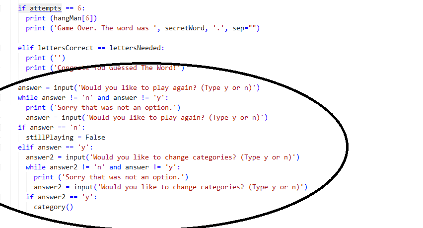
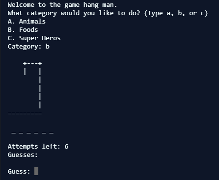

Video Write Up When the game starts the user can choose what category the words will be in. The game then prints the hangman display, a dash for each letter in the word, how many attempts the user has left, and the letters they guessed so far. Next it lets the user guess a letter. It does not let them guess the same letter twice or multiple letters at a time. After they guess it updates the display and will replace a dash if the letter is the same as the dash. The game round will end if they guess all the letters or run out of guesses. When it ends they can choose to play again if so then they can change category if the player chooses to do so.Project Write Up One difficulty was getting the hangman gallows to draw correctly, as sometimes activating this code would result in an error. This issue was resolved by fixing some misplaced functions. Individually, I programmed some of the functions like "main". Download Python GitHub Repository

Algorithm The code segment to the left calls another function which allows the user to choose an option and uses logical concepts to check what option they have choosen.

Abstraction The image to the left is abstraction because the user does not know how the code determines what the user picks and then selects it.